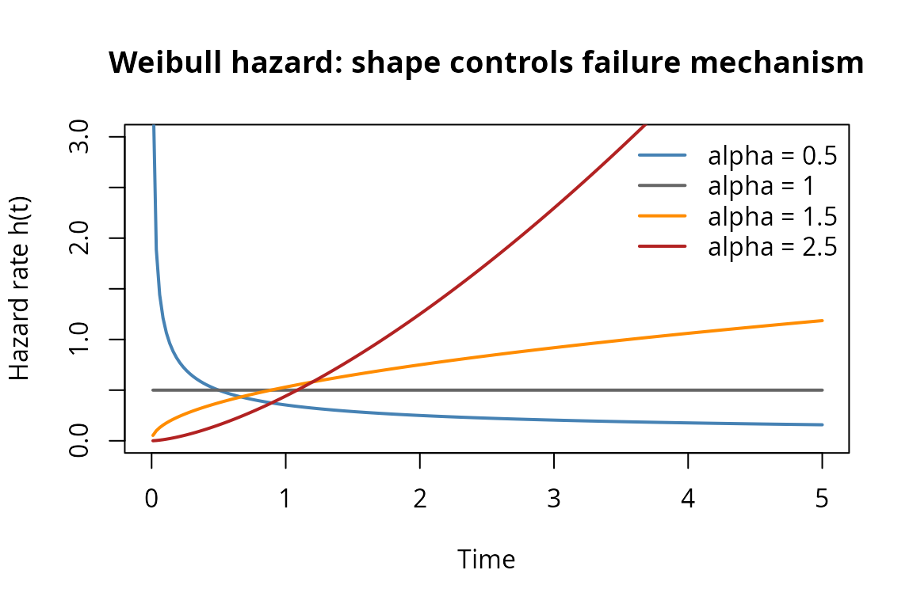

Weibull Parallel Systems: EM Algorithm for Shape-Scale Estimation
Source:vignettes/weibull-em.Rmd
weibull-em.RmdThe exponential distribution is the workhorse of reliability theory, but its constant hazard rate is a strong assumption. Real components exhibit increasing hazard (wear-out), decreasing hazard (early-life failures), or bathtub-shaped hazard curves. The Weibull distribution captures increasing and decreasing hazard through a single shape parameter, making it the natural next step beyond exponential models.
This vignette shows why the exponential machinery for parallel system
estimation does not extend to Weibull components, and how the EM
algorithm in kofn solves the resulting estimation
problem.
Why Weibull?
The Weibull distribution with shape and scale has hazard function . The shape controls the failure mechanism:
- : decreasing failure rate (DFR) – early-life failures, burn-in
- : constant failure rate – exponential (memoryless)
- : increasing failure rate (IFR) – wear-out, fatigue
t_grid <- seq(0.01, 5, length.out = 200)
alphas <- c(0.5, 1.0, 1.5, 2.5)
beta <- 2.0
plot(NULL, xlim = c(0, 5), ylim = c(0, 3),
xlab = "Time", ylab = "Hazard rate h(t)",
main = "Weibull hazard: shape controls failure mechanism")
cols <- c("steelblue", "grey40", "darkorange", "firebrick")
for (i in seq_along(alphas)) {
a <- alphas[i]
h <- (a / beta) * (t_grid / beta)^(a - 1)
lines(t_grid, h, col = cols[i], lwd = 2)
}
legend("topright",
legend = paste0("alpha = ", alphas),
col = cols, lwd = 2, bty = "n")
Weibull hazard functions for different shape parameters.
A parallel system with two Weibull components – one DFR (infant mortality) and one IFR (wear-out) – models a system where one component is fragile early but the other degrades over time. Neither a pure exponential nor a single Weibull can capture this heterogeneity.
What breaks: from exponential to Weibull
For exponential parallel systems, the kofn package uses
an inclusion-exclusion (IE) expansion that converts the product
into a finite sum of exponentials. Every integral needed for the
likelihood, score, and EM E-step has a closed form.
For Weibull components, the analogous product is Expanding this product yields terms like . When the differ, the exponent is a sum of different power functions of – not a linear function. The resulting integrals have no closed form, so the IE approach that works so well for exponentials is inapplicable.
Beyond the IE failure, the exponential’s memoryless property also breaks. For exponentials, has a simple closed form. For Weibull, the truncated mean involves the incomplete gamma function, and the M-step requires solving a transcendental equation for the shape.
Direct MLE struggles
The direct MLE (method = "mle") optimizes the Weibull
parallel system log-likelihood numerically via L-BFGS-B with Nelder-Mead
fallback. This works, but the likelihood surface has problematic
features:
- Shape-scale confounding: different combinations produce similar system CDFs, creating ridges in the likelihood surface.
- Boundary violations: the optimizer can push shape estimates toward zero or infinity, especially for fast-failing components whose lifetimes are deeply left-censored under Scheme 0.
- Shape blow-up: at (the exponential boundary), the direct MLE’s shape RMSE can be 24 times worse than the EM’s.
# Generate data from a Weibull parallel system
set.seed(42)
model_mle <- kofn(k = 2, m = 2, component = dfr_weibull(), method = "mle")
gen <- rdata(model_mle)
true_par <- c(1.5, 2.0, # component 1: shape=1.5, scale=2.0
2.0, 3.0) # component 2: shape=2.0, scale=3.0
df <- gen(true_par, n = 50)
# Fit with direct MLE
fit_mle_fn <- fit(model_mle)
result_mle <- fit_mle_fn(df)
cat("Direct MLE estimates:\n")
#> Direct MLE estimates:
cat(sprintf(" Component 1: shape = %.3f, scale = %.3f\n",
result_mle$shapes[1], result_mle$scales[1]))
#> Component 1: shape = 3.986, scale = 1.683
cat(sprintf(" Component 2: shape = %.3f, scale = %.3f\n",
result_mle$shapes[2], result_mle$scales[2]))
#> Component 2: shape = 1.755, scale = 3.478
cat(sprintf(" Converged: %s\n", result_mle$converged))
#> Converged: TRUEThe EM algorithm
The EM algorithm sidesteps the difficult joint optimization by introducing a latent variable: which component failed last. In a parallel system (), the system lifetime is , so exactly one component has (the critical component) and all others have (left-censored). The identity is unobserved under Scheme 0.
E-step: classification and truncated moments
Given current parameter estimates , the E-step computes:
Classification probabilities: , the posterior probability that component failed last. This is proportional to – the component weight in the system density.
Truncated power moment: for left-censored components. Using the substitution , this reduces to an incomplete gamma function:
Truncated log-moment: , computed via numerical differentiation of the incomplete gamma function.
The kofn package implements these as
trunc_pow_moment() and
trunc_log_moment_vec():
# E[T^alpha | T < t] for T ~ Weibull(alpha=1.5, beta=2.0)
alpha <- 1.5
beta <- 2.0
t_trunc <- 3.0
# Scalar interface
pow_moment <- trunc_pow_moment(k = alpha, t = t_trunc,
alpha = alpha, beta = beta)
cat(sprintf("E[T^%.1f | T < %.1f] = %.4f\n", alpha, t_trunc, pow_moment))
#> E[T^1.5 | T < 3.0] = 1.8440
cat(sprintf(" (compare: t^alpha = %.4f)\n", t_trunc^alpha))
#> (compare: t^alpha = 5.1962)
# Vectorized interface (used in EM inner loop)
v_max <- (t_trunc / beta)^alpha
pow_vec <- trunc_pow_moment_vec(k = alpha, v_max_vec = v_max,
alpha = alpha, beta = beta)
cat(sprintf(" Vectorized result: %.4f (same)\n", pow_vec))
#> Vectorized result: 1.8440 (same)
# Truncated log-moment
log_moment <- trunc_log_moment_vec(v_max_vec = v_max,
alpha = alpha, beta = beta)
cat(sprintf("E[log T | T < %.1f] = %.4f\n", t_trunc, log_moment))
#> E[log T | T < 3.0] = 0.1099
cat(sprintf(" (compare: log t = %.4f)\n", log(t_trunc)))
#> (compare: log t = 1.0986)M-step: profile optimization
Given the E-step expectations, the M-step maximizes the expected complete-data log-likelihood. The key insight is that this decomposes into independent Weibull MLEs – one per component.
For each component :
Profile over shape: Fix and solve for the scale in closed form: , where .
Optimize the profile: Maximize over in one dimension using
optimize().
This avoids the joint -dimensional optimization of the direct MLE, replacing it with one-dimensional optimizations at each EM iteration.
EM vs direct MLE comparison
Let us compare the two estimation methods on a concrete example.
set.seed(123)
# Create models
model_em <- kofn(k = 2, m = 2, component = dfr_weibull(), method = "em")
model_mle <- kofn(k = 2, m = 2, component = dfr_weibull(), method = "mle")
# True parameters: shapes (1.5, 2.0), scales (2.0, 3.0)
true_par <- c(1.5, 2.0, 2.0, 3.0)
# Generate data
gen <- rdata(model_em)
df <- gen(true_par, n = 50)
# Fit with EM
fit_em_fn <- fit(model_em)
result_em <- fit_em_fn(df)
# Fit with direct MLE
fit_mle_fn <- fit(model_mle)
result_mle <- fit_mle_fn(df)
# Compare
cat("True parameters:\n")
#> True parameters:
cat(sprintf(" Component 1: shape = %.2f, scale = %.2f\n", 1.5, 2.0))
#> Component 1: shape = 1.50, scale = 2.00
cat(sprintf(" Component 2: shape = %.2f, scale = %.2f\n", 2.0, 3.0))
#> Component 2: shape = 2.00, scale = 3.00
cat("\nEM estimates:\n")
#>
#> EM estimates:
cat(sprintf(" Component 1: shape = %.3f, scale = %.3f\n",
result_em$shapes[1], result_em$scales[1]))
#> Component 1: shape = 0.985, scale = 1.497
cat(sprintf(" Component 2: shape = %.3f, scale = %.3f\n",
result_em$shapes[2], result_em$scales[2]))
#> Component 2: shape = 2.837, scale = 3.049
cat(sprintf(" Converged: %s, Iterations: %d\n",
result_em$converged, result_em$iterations))
#> Converged: TRUE, Iterations: 18
cat("\nDirect MLE estimates:\n")
#>
#> Direct MLE estimates:
cat(sprintf(" Component 1: shape = %.3f, scale = %.3f\n",
result_mle$shapes[1], result_mle$scales[1]))
#> Component 1: shape = 0.987, scale = 1.501
cat(sprintf(" Component 2: shape = %.3f, scale = %.3f\n",
result_mle$shapes[2], result_mle$scales[2]))
#> Component 2: shape = 2.836, scale = 3.048
cat(sprintf(" Converged: %s\n", result_mle$converged))
#> Converged: TRUEOn a single dataset, both methods may produce similar estimates. The EM’s advantage becomes apparent across many replications, especially when shape parameters are near 1.0 or components have very different scales.
Shape effect on estimation difficulty
# Full simulation: vary shape, compare EM vs MLE (takes several minutes).
# Set run_long <- TRUE in setup chunk to reproduce.
set.seed(2026)
alphas <- c(0.5, 1.0, 1.5, 2.0, 3.0)
R <- 200; n <- 300
for (a in alphas) {
true_par <- c(a, 2.0, a, 3.0)
mdl_em <- kofn(k = 2, m = 2, component = dfr_weibull(), method = "em")
mdl_mle <- kofn(k = 2, m = 2, component = dfr_weibull(), method = "mle")
gen <- rdata(mdl_em)
f_em <- fit(mdl_em); f_mle <- fit(mdl_mle)
em_sh <- mle_sh <- matrix(NA, R, 2)
for (r in seq_len(R)) {
d <- gen(true_par, n = n)
re <- tryCatch(f_em(d), error = function(e) NULL)
rm <- tryCatch(f_mle(d), error = function(e) NULL)
if (!is.null(re) && re$converged) em_sh[r, ] <- sort(re$shapes)
if (!is.null(rm) && rm$converged) mle_sh[r, ] <- sort(rm$shapes)
}
ok_em <- complete.cases(em_sh); ok_mle <- complete.cases(mle_sh)
cat(sprintf("alpha=%.1f: EM RMSE=%.3f, MLE RMSE=%.3f\n", a,
sqrt(mean((em_sh[ok_em,] - a)^2)), sqrt(mean((mle_sh[ok_mle,] - a)^2))))
}The table below summarizes the shape effect results from 200 Monte Carlo replications per configuration (, two-component parallel system with scales , common shape ).
| EM Conv. (%) | EM Shape RMSE | EM Scale RMSE | MLE Conv. (%) | MLE Shape RMSE | MLE Scale RMSE | |
|---|---|---|---|---|---|---|
| 0.5 | 98 | 0.21 | 2.06 | 100 | 0.64 | 2.21 |
| 1.0 | 100 | 0.32 | 0.82 | 100 | 7.49 | 0.91 |
| 1.5 | 100 | 0.50 | 0.53 | 100 | 2.05 | 0.55 |
| 2.0 | 100 | 0.74 | 0.40 | 100 | 0.91 | 0.40 |
| 3.0 | 100 | 0.97 | 0.24 | 100 | 1.26 | 0.26 |
Two systematic patterns emerge:
Shape RMSE increases with (0.21 at to 0.97 at ), while scale RMSE decreases (2.06 to 0.24). Higher shapes concentrate the Weibull distribution, making scales easier to pin down but creating a steeper likelihood surface where the shape is harder to identify.
The EM dominates in shape recovery. At (the exponential boundary), the EM achieves shape RMSE = 0.32 while the direct MLE explodes to 7.49 – a 24-fold difference. The MLE’s shape estimates for the fast component are driven to extreme values by the flat likelihood ridge along the shape-scale confounding direction. Both methods achieve nearly identical scale RMSE, confirming they find the same likelihood optima when they converge – the EM simply reaches them more reliably.
Mixed shapes: DFR + IFR systems
Real systems contain components with heterogeneous failure mechanisms. A motor with early-life electrical failures (DFR, ) and mechanical wear-out (IFR, ) is a natural example. The EM handles this shape diversity better than direct MLE.
set.seed(456)
# Mixed DFR + IFR: shape (0.8, 1.5), scale (2.0, 3.0)
model_em <- kofn(k = 2, m = 2, component = dfr_weibull(), method = "em")
model_mle <- kofn(k = 2, m = 2, component = dfr_weibull(), method = "mle")
true_par <- c(0.8, 2.0, 1.5, 3.0)
gen <- rdata(model_em)
df <- gen(true_par, n = 50)
fit_em_fn <- fit(model_em)
fit_mle_fn <- fit(model_mle)
result_em <- fit_em_fn(df)
result_mle <- fit_mle_fn(df)
cat("Mixed DFR + IFR system: alpha = (0.8, 1.5), beta = (2.0, 3.0)\n\n")
#> Mixed DFR + IFR system: alpha = (0.8, 1.5), beta = (2.0, 3.0)
cat("EM estimates:\n")
#> EM estimates:
cat(sprintf(" Component 1: shape = %.3f (true 0.8), scale = %.3f (true 2.0)\n",
result_em$shapes[1], result_em$scales[1]))
#> Component 1: shape = 1.920 (true 0.8), scale = 2.133 (true 2.0)
cat(sprintf(" Component 2: shape = %.3f (true 1.5), scale = %.3f (true 3.0)\n",
result_em$shapes[2], result_em$scales[2]))
#> Component 2: shape = 1.275 (true 1.5), scale = 3.222 (true 3.0)
cat("\nDirect MLE estimates:\n")
#>
#> Direct MLE estimates:
cat(sprintf(" Component 1: shape = %.3f (true 0.8), scale = %.3f (true 2.0)\n",
result_mle$shapes[1], result_mle$scales[1]))
#> Component 1: shape = 1.922 (true 0.8), scale = 2.136 (true 2.0)
cat(sprintf(" Component 2: shape = %.3f (true 1.5), scale = %.3f (true 3.0)\n",
result_mle$shapes[2], result_mle$scales[2]))
#> Component 2: shape = 1.274 (true 1.5), scale = 3.220 (true 3.0)
# Full mixed-shape simulation (set run_long <- TRUE to reproduce)
set.seed(2026)
scenarios <- list(
mild = list(par = c(0.8, 2.0, 1.5, 3.0), label = "Mild (0.8, 1.5)"),
strong = list(par = c(0.5, 2.0, 3.0, 3.0), label = "Strong (0.5, 3.0)"),
three = list(par = c(0.7, 1.5, 1.5, 2.0, 2.5, 3.0),
label = "Three-comp (0.7, 1.5, 2.5)")
)
R <- 200; n <- 300
for (sc in scenarios) {
m <- length(sc$par) / 2
mdl <- kofn(k = m, m = m, component = dfr_weibull(), method = "em")
gen <- rdata(mdl); f <- fit(mdl)
true_sh <- sc$par[seq(1, length(sc$par), by = 2)]
errs <- numeric(0)
for (r in seq_len(R)) {
res <- tryCatch(f(gen(sc$par, n = n)), error = function(e) NULL)
if (!is.null(res) && res$converged)
errs <- c(errs, (sort(res$shapes) - sort(true_sh))^2)
}
cat(sprintf("%s: EM shape RMSE = %.2f\n", sc$label, sqrt(mean(errs))))
}Across replications, three scenarios illustrate the pattern:
Mild mix (): Both methods converge reliably. Mean shape RMSE is 0.34 (EM) – the modest shape separation makes this a tractable problem.
Strong mix (): One DFR component with unbounded hazard at and one strongly IFR component that fails in a narrow window. This creates a bimodal posterior over which component failed last. Mean shape RMSE is 0.39 (EM).
Three-component (): The fast component (, ) is deeply left-censored, producing shape RMSE of 3.60 under EM. The EM still outperforms direct MLE: mean shape RMSE 1.62 vs. 5.32, with the MLE’s fast-component shape RMSE reaching 14.7 from boundary violations.
Base R stats integration
The kofn package returns fisher_mle objects
(from likelihood.model), which provide standard R methods
for inference. This means coef(), vcov(),
logLik(), AIC(), confint(), and
summary() all work out of the box.
set.seed(789)
model_em <- kofn(k = 2, m = 2, component = dfr_weibull(), method = "em")
gen <- rdata(model_em)
true_par <- c(1.5, 2.0, 2.0, 3.0)
df <- gen(true_par, n = 50)
fit_em_fn <- fit(model_em)
result <- fit_em_fn(df)
# Coefficient extraction
cat("coef():\n")
#> coef():
print(coef(result))
#> [1] 8.313856 1.548132 2.139037 3.407156
# Variance-covariance matrix (from observed Fisher information)
cat("\nvcov():\n")
#>
#> vcov():
print(round(vcov(result), 5))
#> [,1] [,2] [,3] [,4]
#> [1,] 8.05075 0.07980 -0.04736 -0.01842
#> [2,] 0.07980 0.00764 -0.00444 -0.00191
#> [3,] -0.04736 -0.00444 0.06655 0.02229
#> [4,] -0.01842 -0.00191 0.02229 0.05829
# Log-likelihood with degrees of freedom
cat("\nlogLik():\n")
#>
#> logLik():
print(logLik(result))
#> 'log Lik.' -79.56766 (df=4)
# Model selection criteria
cat("\nAIC:", AIC(result), "\n")
#>
#> AIC: 167.1353
cat("BIC:", BIC(result), "\n")
#> BIC: 174.7834
# Confidence intervals (Wald-type, based on Hessian)
cat("\nconfint() (95% Wald intervals):\n")
#>
#> confint() (95% Wald intervals):
print(confint(result))
#> 2.5% 97.5%
#> [1,] 2.752685 13.875026
#> [2,] 1.376787 1.719476
#> [3,] 1.633431 2.644644
#> [4,] 2.933972 3.880340
# Full summary
cat("\nsummary():\n")
#>
#> summary():
print(summary(result))
#> Maximum Likelihood Estimate (Fisherian)
#> ----------------------------------------
#>
#> Coefficients:
#> Estimate Std. Error 2.5% 97.5%
#> [1,] 8.31386 2.83738 2.75269 13.875
#> [2,] 1.54813 0.08742 1.37679 1.719
#> [3,] 2.13904 0.25797 1.63343 2.645
#> [4,] 3.40716 0.24142 2.93397 3.880
#>
#> Log-likelihood: -79.57
#> AIC: 167.1
#> Number of observations: 50The confidence intervals are Wald-type, based on the observed Fisher information (negative inverse Hessian of the log-likelihood). Under Scheme 0, the shape parameters typically have wider intervals than the scales, reflecting the information asymmetry: the scale of the last-failing component is well-determined by the observed system lifetime, but the shape is harder to identify from the system CDF alone.
Summary
The Weibull extension to parallel system estimation is not a simple generalization of the exponential case. Three structural properties break:
- No IE closed form: the inclusion-exclusion expansion produces sums of different power functions, not simple exponentials.
- No memoryless property: truncated moments require incomplete gamma functions instead of elementary formulas.
- Shape-scale confounding: the likelihood surface has ridges that trap gradient-based optimizers.
The EM algorithm addresses these difficulties by:
- Decomposing the -dimensional optimization into independent one-dimensional profile optimizations.
- Guaranteeing monotone likelihood increase at every iteration.
- Using numerically stable truncated Weibull moments via the substitution.
The result is substantially better shape recovery than direct MLE, particularly at (24x improvement) and for multi-component systems with mixed shapes (3.3x improvement). Both methods achieve similar scale RMSE – the EM’s advantage is structural, preventing the boundary violations and parameter blow-up that plague gradient-based optimization on the Weibull likelihood surface.
For applications requiring even better shape estimation, the package
also supports Scheme 1 (periodic inspection), which provides
component-level interval censoring data. See
vignette("scheme1") for details.